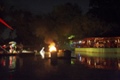

Речники
Художественное объединение Клуб Речников. Представляет Ваш навигатор в художественной жизни Петербурга - газету «СусанинЪ»
Художественное объединение Клуб Речников. Представляет Ваш навигатор в художественной жизни Петербурга - газету «СусанинЪ»
По случаю открытия нового летнего проекта "Лебединое озеро" авторами кафе "Как на Канарах" и клуба- ресторана "Солянка".
.
 Постановка: Алексей Богданов, Максим Полещук, Денис Александров. Композитор Сергей Демидов. Буратино – Артем Игнатьев Мальвина – Анастасия Кадрулева Карабас Барабас– Майкл Тумблер Пьеро - Тимофей Абрамов, Дуремар - Денис Ширко. Лазеры – Олег Ишутов. Спецэффекты – Роман Грузов, Геннадий Бохан. Костюмы – Годли Видео – rivermax. Надувные инсталляции – Бармалей, Годли.